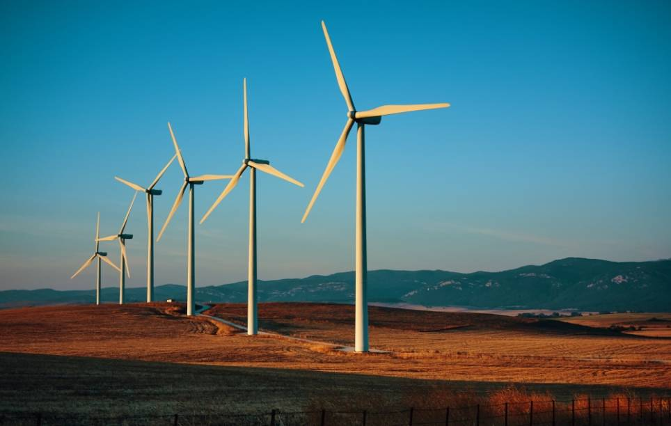

Ventajas de la Energia Eólica

Es una fuente de energía inagotable
Es una fuente de energía renovable. El viento es una fuente abundante e inagotable, lo que
significa que siempre se puede contar con la fuente original que produce la energía. Lo que hace
que no tenga fecha de caducidad. Además, está disponible en muchos lugares del mundo.
Ocupa poco espacio
Para producir y acumular la misma cantidad de energía eléctrica, un campo eólico necesita
menos terreno que un campo de energía fotovoltaica.
Además., es reversible, lo que significa que el área ocupada por el parque puede restaurarse
fácilmente para renovar el territorio preexistente.
No contamina
La energía eólica es una fuente de energía más limpia después de la energía solar. Esto es así
porque durante su proceso de generación no lleva implícito un proceso de combustión. Así, no
produce gases tóxicos, ni residuos sólidos alguno. Para hacernos una idea. Un aerogenerador
alcanza una capacidad de energía similar a la de 1.000 Kg de petróleo.
Además, las propias turbinas tienen un ciclo de vida muy largo antes de ser retiradas para su
eliminación.
Bajo coste
Los costes de las turbinas eléctricas eólicas y el mantenimiento de la turbina son relativamente
bajos. El coste por kW producido es bastante bajo en las áreas muy ventosas. En algunos casos,
el coste de producción es el mismo que el del carbón, e incluso la energía nuclear.
Es compatible con otras actividades
La actividad agrícola y ganadera convive armoniosamente con la actividad de un parque eólico.
Esto hace que no tenga un impacto negativo en la economía local, permite que las instalaciones
no interrumpan el desarrollo de su actividad tradicional al mismo tiempo que genera una nueva
fuente de riqueza.